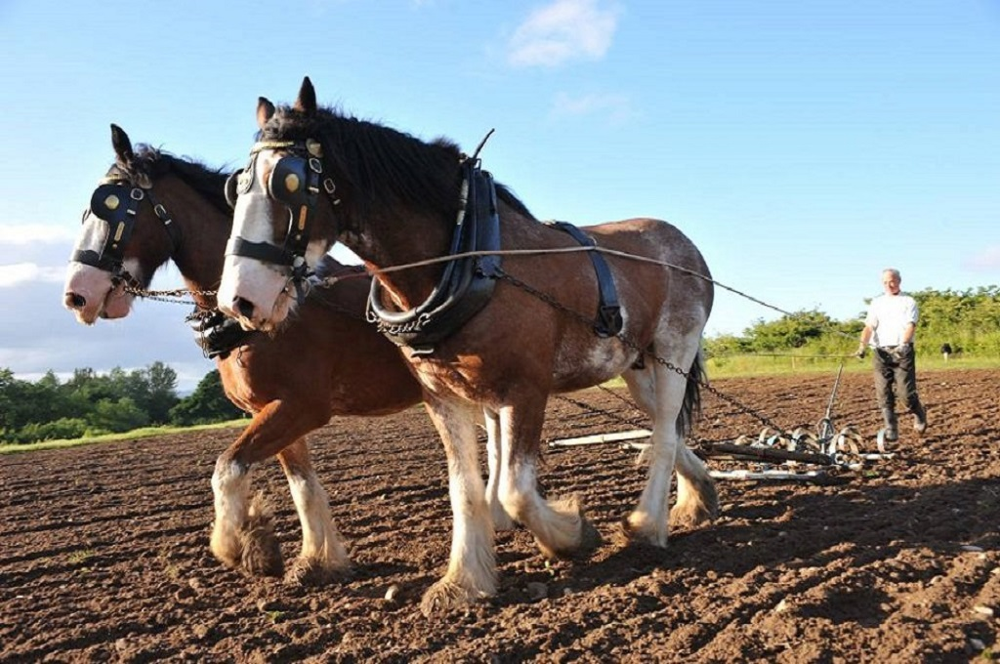

Muckross Riding Stables
~ Bed & Breakfast ~
Things to do
Muckross Traditional Farms
For a unique experience of old Ireland, Muckross Traditional Farms offers a peek into the past lives of those living in the countryside; where fetching a bucket of water from the well was a daily chore and cooking was done on a roaring open fire, as electricity was yet to be introduced.

Muckross House
Nestled within the 26,000 acres of Killarney National Park is Muckross House; an elegant 19th century Victorian Mansion on the shores of Muckross Lake, the second of Killarney’s three lakes, famed for their beauty and inspiration. Muckross House has been welcoming visitors for decades; today the house remains furnished with much of its original furniture, art work, books and many other household contents. The elegance of these furnished rooms portrays the lifestyle of the living gentry while downstairs in the basement kitchen witnesses the life of a servant employed by the house. Also within the house is a craft room where the visitor can view demonstrations of traditional skills such as weaving, book binding and pottery.